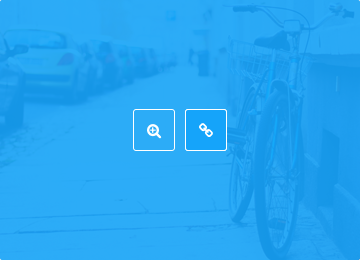

Showcase your work like a pro.
Contact me if you like my work



Designers everywhere gush with admiration upon seeing a web design and exclaim "its beautiful, it's so clean!". There are a countless number of webdesign round-ups dedicated to 'clean' design and it is a term thrown around quite a bit in the web design community. It can be easy to spot a good example of clean design.
STRICT has been designed to be fully responsive on all devices
This multipurpose theme is especially created to be used for different projects.
This multipurpose theme is especially created to be used for different projects.
Contact me if you like my work
We ensure quailty & support